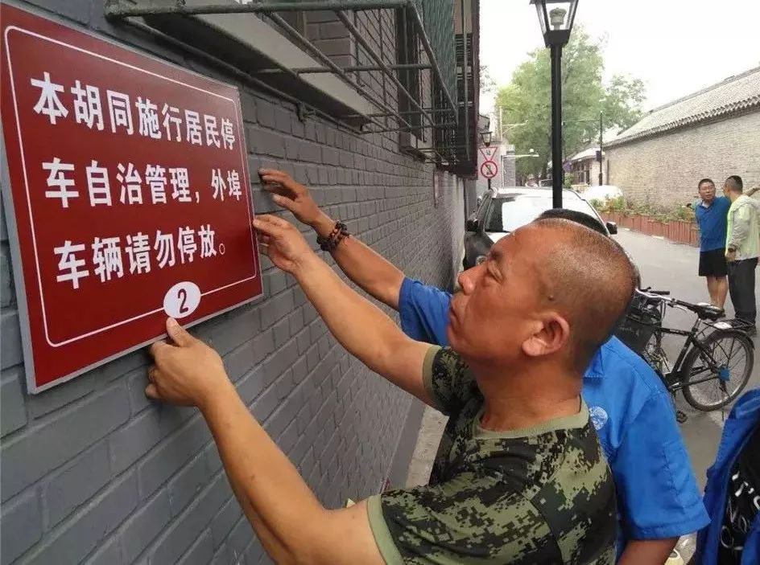
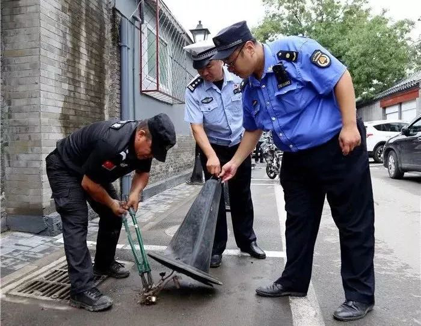
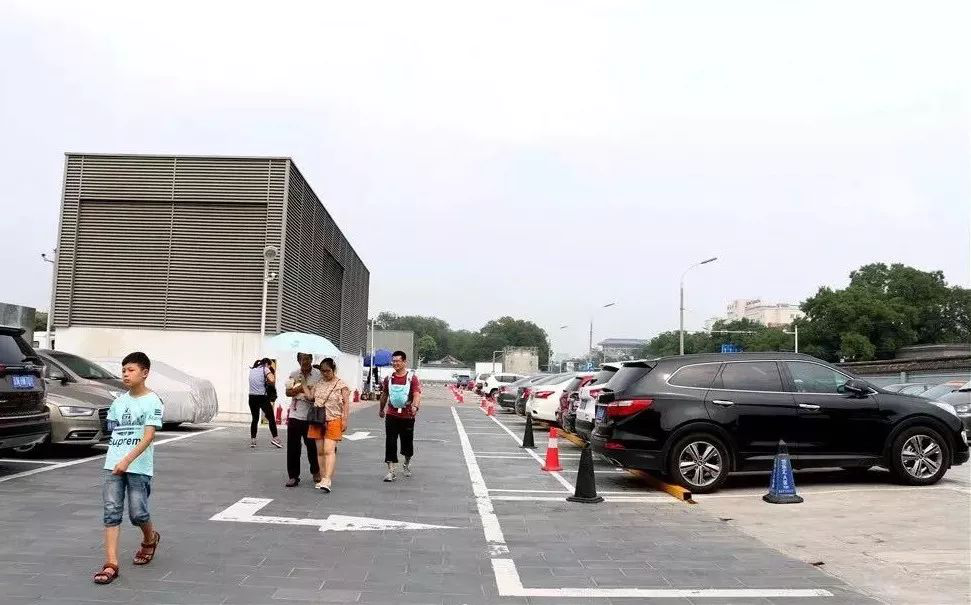
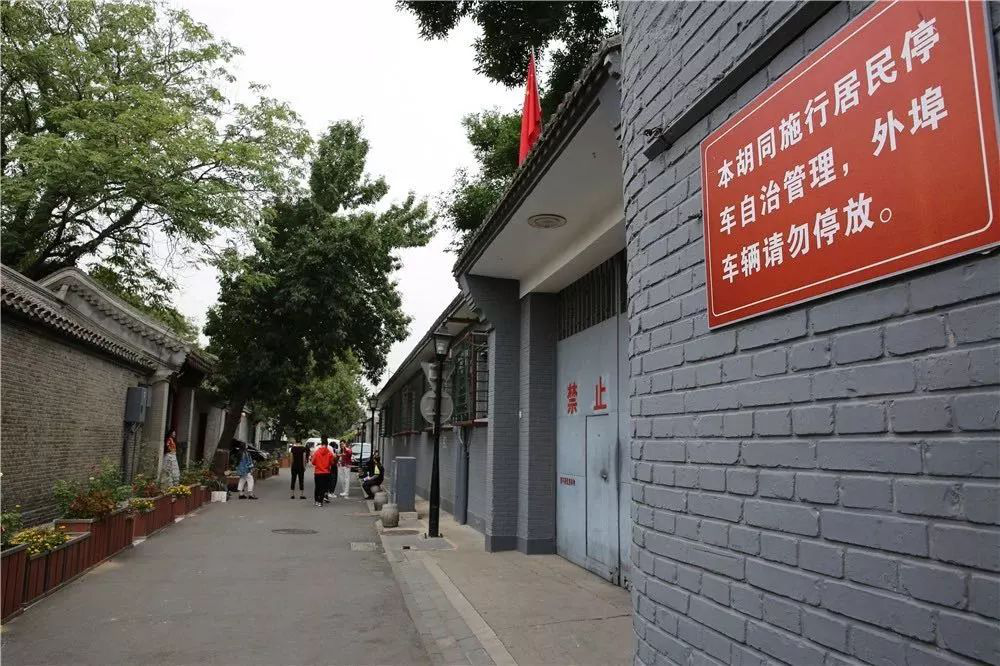

东城胡同停车自治管理全面启动
来源：北京东城
东城区胡同居民停车自治管理工作于近日全面展开。未来，东城区将以社区为单位，实现居民停车自治管理全覆盖，并率先探索多元化差异管理模式。
停车位管理居民说了算
记者从东城区交通委了解到，目前全区共有街巷自治停车位约6000个，具体如何分配、管理将由居民说了算。
为此，区交通委委托北京市静态交通业商会协助各街道、社区成立胡同停车自治管理委员会，探索“街道牵头、社区主导、居民参与”的共治共享模式。近几个月来，商会深入街道、社区，根据实际情况组织属地居民成立自管会，通过居民共商共议，实现街巷停车自治。
“每个社区的自管会受属地社区党委领导，通过民主选举产生代表。值得一提的是，自管会不仅由居民组成，还包括所在地周边单位和企业参与，实现共治。”商会会长于化龙告诉记者，自管会成立后，商会将培训自管会成员学习《北京市机动车停车条例》，熟悉停车方面的专业知识，再根据自己社区和所在胡同的具体情况，制定有针对性的停车公约。为确保自管会制定公约的合理性，商会还将协助街道通过科学的方法论证公约的合理性，调查居民的满意度。
挖掘更多共享停车位
记者从区交通委获悉，自治管理工作将分三个阶段展开：首先，通过自管会调研属地居民的实际停车需求；然后，经过区级有关部门认证，确定胡同内可规划的停车位数量；最后，调查胡同周边的停车资源，寻找共享车位。
《北京市机动车停车条例》规定，本市推进单位或者个人开展停车泊位有偿错时共享，停车设施管理单位应当予以支持和配合，并提供便利。公共建筑的停车设施具备安全、管理条件的，应当将机动车停车设施向社会开放，并实行有偿使用。
“胡同周边共享停车资源的挖掘是解决胡同停车问题的关键，目前这项工作存在一定困难。按照市发改委有关规定，定价权在停车场产权人手里，因此停车价格政府和社区做不了主。”区交通委相关负责人表示，为让居民享受更大的优惠和便利，区交通委将联合街道以逐一谈判的方式，尽量为属地居民挖掘胡同周边的共享车位。
探索多元化差异管理模式
据了解，区交通委正在起草《东城区停车自治管理指导意见》，将统一各街道、社区停车自治的原则，进一步规范停车自治方面的专业力量保障以及配套硬件设施建设。在此基础上，每个社区将根据自身情况，探索多元化差异管理模式。
“差异管理包括资格、价格、权限差异等。比如‘五证合一’居民比‘四证合一’居民更有资格获得车位；胡同里的车位和周边共享车位价格不同，不同资格的居民停车权限也有差异，从而体现公平公正。”于化龙称，其他区停车自治管理工作基本采用单一差异管理模式，东城区的多元化差异管理模式探索成功后，将开全市先河。